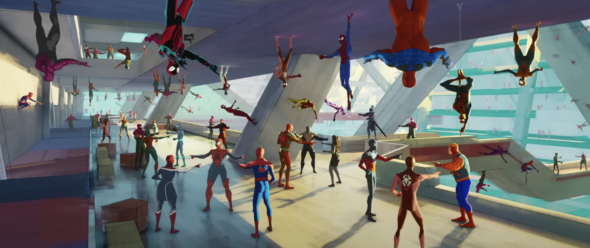

Un trio de réalisateurs de talent
Publié le : 18/10/2023
Temps de lecture : 4 min
Réalisé par le nombre inhabituel de 3 réalisateurs, la trilogie de Miles Morales se trouve entre de bonnes mains, Justin K. Thompson, Kemp Powers ou encore Joaquim Dos Santos sont trois réalisateurs talentueux qui se complètent bien entre eux.
Le film a été réalisé non pas par un ou deux réalisateurs, mais bien par un trio talentueux :

Tout d'abord, Justin K. Thompson qui est le seul des trois à avoir travaillé sur le premier opus de la trilogie : Spiderman : New generation. Il n'occupait cependant pas le poste de réalisateur à ce moment-là et était chargé de la tâche de réaliser la majorité des décors du film. Il est aussi connu pour son travail sur les 2 films : Tempête de boulettes géantes dans lesquels il était chef décorateur. Ainsi, de par son expérience et ses relations avec les réalisateurs, il a pu en occuper le poste pour les 2 prochains films de la trilogie Miles Morales.
Kemp Powers est le deuxième réalisateur du film, il fut d'abord assez peu connu du grand public bien qu'il eût déjà écrit le script du film One night in Miami pour lequel il était aussi producteur exécutif, ainsi que la première saison de Star-Trek Discoveries. C'est en 2020 qu'il devient plus connu en co-réalisant le film d'animation Pixar Soul et devint le premier afro-américain à occuper une position de réalisateur sur un film Disney. Il est désormais engagé à réaliser la suite de Across the spider-verse auprès des deux autres réalisateurs.
Le troisième et sûrement le plus connu des trois est Joaquim Dos Santos. Il fut d'abord storyboard artist pour la série animée Justice League puis fut promu au poste de réalisateur pour la troisième saison de la série. Plus tard, il rejoint Avatar : Le dernier maître de l'air mais cette fois ci en tant que storyboard artist de nouveau mais, à partir de la troisième saison, il commença à réaliser des épisodes et ce jusqu'à la fin de la série. De plus, il fut co-réalisateur et co-producteur exécutif sur la séquelle La légende de Korra. Enfin, il retourna chez Warner Bros pour réaliser 2 courts métrages d'animation : The Spectre et Jonah Hex. Il finira par occuper le poste de réalisateur pour le film Spiderman : Across the spider-verse et sa suite directe Beyond the spider-verse.

Un trio complémentaire
Ainsi, ces trois réalisateurs possèdent des compétences que l'on pourrait qualifier de complémentaires : Thompson possède l'avantage d'avoir contribué au tout premier film de la trilogie et de faire valoir la portée esthétique au film ; Powers possède lui une indéniable expérience en termes d'écriture ; et Dos Santos apporte ses connaissances en story-boarding, indissociables du poste de réalisateur, et encore plus dans le cinéma d'animation.